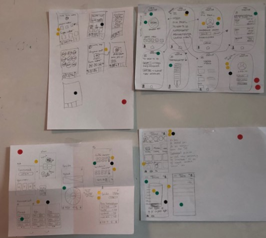
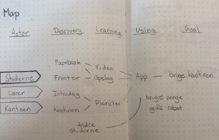

i dette forløb arbejde vi med design af en elektronisk løsning på et problem vi så på kea. vi arbejdede med at udvikle ideer gennem forskellige metoder. for eksempel lavede vi research analyse af en survey-undersøgelse som var blevet udført i klassen.
vi brugte konklusionerne fra vores analyse, til at få forståelse for hvilke problemer, de nuværende studerende så med studielivet.
Igennem forløbet brugte vi design-sprintens værktøjer - map, sketch, decide, prototype, test - til at udvikle vores ide og nå frem til et produkt, i form af en clickbar XD prototype, som vi brugte til at lave en brugertest.
I min gruppe arbejde vi med en app som skulle gøre kantinen mere attraktiv for Keas elever. vores research havde vist at folk fandt kantinen kedelig, dyr, og tom. Derfor byggede vores app på at skabe interaktive elementer som fx. vores stempelkort der skulle give større incitament at købe kaffe i kantinen, ved give folk en følelse af opsparing og gevinster.